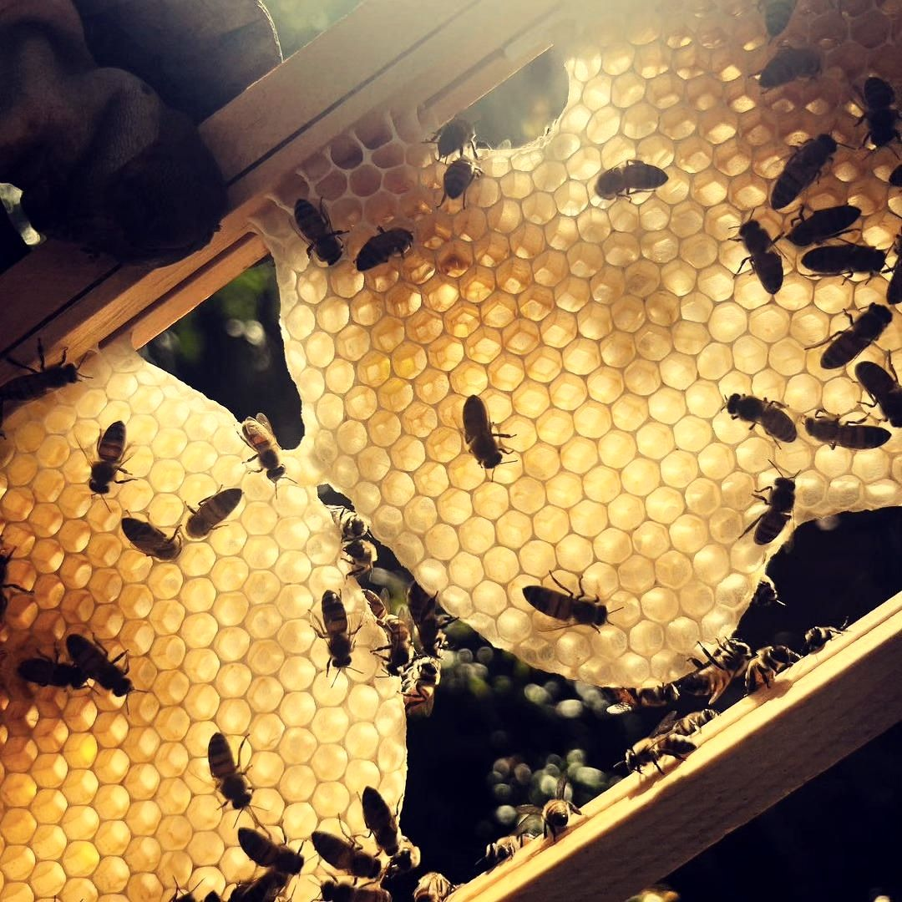

Пасічницький рік починається навесні й закінчується зимовим спокоєм. Дати залежать від погоди й року, тож тут усе приблизно.
Навесні бджоли роблять перші облети, шукають пилок і нарощують силу, а пасічник оглядає сім’ї: докладно в статті «Весна». Улітку триває медозбір, а потім відкачка меду: про це «Літо». Восени бджіл готують до холодів, а взимку їх не тривожать: «Осінь і зима».
Тепла рання весна зсуває цвітіння на тижні, а холодна затримує. Дощ чи посуха можуть скоротити медозбір, а акація цвіте лише кілька днів, і її легко прогаяти. Тому ніхто не може сказати наперед, які саме сорти й у якій кількості вийдуть. Про це докладніше в статті «Чому мед щороку різний».
Щоб бачити весь сезон одним поглядом, є календар «Медоноси». Що з цього перетворюється на мед, читайте на сторінці «Сорти меду», а як мед відкачують, описано в статті «Як ми качаємо мед».
Більшу частину року бджолам не потрібна допомога: вони самі будують стільники, доглядають за розплодом, носять нектар і воду, охороняють вулик і гріються взимку. Пасічник лише стежить, щоб сім’я була здорова, мала запас корму й місце. Тому в «Моєму році» стільки спостереження й так мало втручання.
Навесні матка нарощує відкладання яєць, і сім’я швидко росте. Улітку на піку в ній десятки тисяч бджіл, і вона збирає запаси. Восени розплоду стає менше, з’являються зимові бджоли, а трутнів у вулику вже не терплять і виганяють. Узимку все стихає: бджоли в клубку споживають запаси меду. Докладніше про кожну пору в статтях «Весна», «Літо» й «Осінь і зима».
Навесні оглядаю сім’ї й готую вулики. Улітку стежу за медозбором і качаю мед, коли він готовий. Восени залишаю бджолам запас і готую вулики до холодів. Узимку майже не втручаюся: готую інвентар, працюю з воском. Одна й та сама річ повторюється з року в рік, але різне цвітіння й погода не дозволяють роботі стати механічною.
Кожна пора року — нагода допомогти бджолам. Навесні посадіть квіти, влітку не обприскуйте цвітіння, восени залиште сухі стебла й опале листя на ділянці. Прості кроки зібрано в статті «Як допомогти бджолам».
Коли починається пасічницький сезон?
Із першими теплими днями, коли бджоли роблять перший облет. Дата щороку різна.
Коли качають мед?
Коли бджоли запечатали рамки воском. Перша відкачка буває на початку літа, з акації, далі за сезоном.
Чи всі сорти меду бувають щороку?
Ні. Акація, ріпак, липа й гречка залежать від погоди та від того, що посіяно поруч.
Чи працює пасічник узимку?
Безпосередньо біля бджіл майже ні: вулики не відкривають. Зимою він готує інвентар і працює з воском.